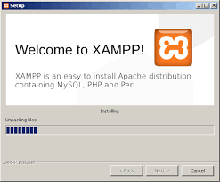
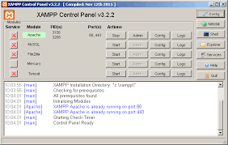

Kacper Faber
4TB
Jest to interpretowany, skryptowy język programowania zaprojektowany do generowania stron internetowych i budowania aplikacji webowych w czasie rzeczywistym. PHP jest najczęściej stosowany do tworzenia skryptów po stronie serwera WWW, ale może być on również używany do przetwarzania danych z poziomu wiersza poleceń, a nawet do pisania programów pracujących w trybie graficznym (np. za pomocą biblioteki GTK+, używając rozszerzenia PHP-GTK). Implementacja PHP wraz z serwerem WWW Apache oraz serwerem baz danych MySQL określana jest jako platforma AMP (w środowisku Linux – LAMP, w Windows – WAMP). Według W3Techs PHP jest używany przez 77,4% wszystkich stron internetowych, których język programowania po stronie serwera jest znany (stan 2022-05-07).
Możemy wyróżnić dwie kategorie:
Uruchamianie - Służące do uruchomienia napisanego programu.
Pisanie - Służące do pisania kodu PHP
Testowanie - Testowanie napisanego przez nas kodu.
Narzędzia i programy potrzebne, żeby uruchomić program napisany w PHP
Np. Apache ze wtyczką do PHP
Lub XAMPP [pakiet zawiera skonfigurowany program Apache]
Poprawnie skonfigurowany intepreter PHP
Przykładowe programy do pisania kodu PHP
Najbardziej zaawansowane środowisko programistyczne
Łatwo dostępny i konfigurowalny notatnik
Notatnik
Otwarto-Źródłowe środowisko programistyczne
Testowanie kodu, czyli pisanie małych programów sprawdzających, czy kawałek kodu zachowuje sie zgodnie z przewidywaniami.
phpunit - Framework do testowania kodu PHP.
XAMPP to pakiet zawierający i uruchamiający program Apache, serwer MySQL, interpreter PHP oraz języka Perl.
1. Instalacja programu XAMPP
2. Uruchamianie poszczególnych usług
3. Obok poszczególnych usług znajdują się przyciski przekierowujące np. do plików z logami czy konfiguracji.
Komentarze są ignorowane przez interpreter, ten fragment kodu nic nie wywoła. Można tam wstawić notatki lub adnotacje o autorze.
Komentarze zapisujemy poprzez:
// - komentarzem jest cała linia od wystąpienia tego znaku.
/* ... */ - Komentarzem jest fragment pomiędzy znakami
+ - Operator dodawania
- - Operator odejmowania
/ + Operator dzielenia
* - Operator mnożenia
= - Operator przypisania
== - Operator porównania
>> / << - Operator[y] przesunięcia bitowego
& - Operator "adresu", zapisuje referencje do wartości, a nie samą wartość
< - Lewa strona mniejsza od prawej
> - Prawa strona większa od lewej
>= - lewa strona większa bądź równa prawej
<= - prawa strona większa bądź równa lewej
-> - Operator uzyskania dostępu do zmiennej
if (/* Warunek logiczny */) { /* Co sie wydarzy gdy warunek zostanie spełniony */}
else if (/* Warunek */) { /* Co sie wydarzy warunek został spełniony, ale warunek napisany bezpośrednio powyżej nie */}
else { /* Gdy warunek napisany bezpośrednio powyżej nie został spełniony */}
Ten sam fragment kodu wykonuje sie wiele razy, do momentu przerwania. Wykorzystywane są również do iteracji po elementach jakiejś listy.
for (/* zmienna */; */ warunek np. zmienna mniejsza niz 5 */; /* Co sie dzieje po każdej iteracji np. zmienna dodać 1*/)
for ($x=0; $x<100; $x++) {/* kod do wywoływania za każdym razem */
while (/*warunek*/) {*/ kod */ } - dopóki warunek jest spełniony
while (true) { echo "x"; } // zawiesza stronę, bo pętla pracuje cały czas.
foreach (/* tablica */ as */ zmienna */) { // kod }
Foreach wykonuje się dla każdego elementu listy [iteracja]
break - Przerywa pętle i wychodzi z niej [idzie dalej]
continue - Przewija pętle raz.
dziekuje za uwage